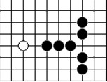

【行云专题】当然是活三
#1 【行云专题】当然是活三 作者：茗弈宽容 发表时间：2010-12-16 17:58:12
五子棋的基础知识点有很多，特别是对棋型的准确理解，虽然在实战中派到的用场较少，但是对于五子棋的理论发展而言却是很重要的。
近来看到一篇关于探讨活三、活四的文章（下称 X 文）。对五子棋基本棋型，作者是下了一番功夫的，但是其理解和判断却失之偏颇，因此笔者对于文中的观点提些不同意见。
文中对活三、活四的探讨，是从下图开始的。在横线上的三是否是活三？

X 文作者对于判断是否活三，给出了一个标准。即， 判断一个三是否是活三，唯一的方法是判断其活四点，是否可以落子形成活四，如果可以落子，则是活三。
在讨论这个问题前，我们有必要先了解一下“活三”、“活四”的定义。由国家体育总局棋牌运动管理中心主任、中国棋院院长刘思明主编，人民体育出版社出版的《五子棋知识》第十八章明确给出了“活三”和“活四”的定义。
活三，就是己方再落一子能形成活四的三。
/*760*90，创建于2012-2-9*/ var cpro_id = 'u761865';
#2 Re:当然是活三 作者：gerbo 发表时间：2010-12-16 18:25:22
“该图片仅限百度用户交流使用” 图未可见~！#3 Re:当然是活三 作者：雪飞 发表时间：2010-12-16 19:09:14
看到顾老师这篇文章，我感到很高兴，这是我期望看到的，我希望能有更多的人来参与五子棋理论的探讨。我写X文的目的正是抛砖引玉，我希望能看到一个合理的解释。
这里再赘言两句：
1、假设我的观点是错误的，那么renjusolver、黑石、renlib等软件开发者需要再努力了，因为软件程序的禁手判断算法逻辑可能出现了问题，这个算法跟可能成立的理论相悖。从这些软件使用的广泛性来说，寻找一个合理的禁手算法逻辑是必须的，不然更多的人会被误导。
2、当然，我还是认为这些软件的禁手算法逻辑并没问题，也就是说我还是坚持自己的观点。举个简单的例子，就是“长连与活四的同时形成，是否还算活四”，我一直无法理解，如果可以形成活四，那么怎么可能这个三不是活三？或许这也正是我的糊涂之处，期盼LS的指点。假设还是活四，那么，复杂禁手的判断会让我更加困惑，一个三的活四点，含有了禁手，禁手并不能改变它能形成活四的可能，那么，这个复杂禁手的判断如何进行下去呢？因为我的理解就是，假设能形成活四，那那个三就是活三，而如果是活三，我就可以据此来判断禁手了，不再有继续填子判断下去的必要了。
3、禁手的判断，是理论层面上的，实战时看不到，并不能改变它当时是禁手的本性，这个不必多解释。
有兴趣的朋友可以再看看这篇X文，发表在《五子茶刊》创刊号上，期待听到更多不同的声音。
另外，借此发表一篇招募广告，《五子茶刊》编辑部继续招募编辑，以及征集稿件，所有有关五子棋话题的都很受欢迎，期待大家的支持！《五子茶刊》第二期的编撰工作，正在有序进行，我们计划在一月初发布:)
［此帖子已被 雪飞 在 2010-12-16 19:14:27 编辑过］
［ 掌棋宣传员 于 2010-12-16 21:49:39 时花20金币送鲜花一朵］
［ 掌棋宣传员 于 2010-12-16 21:49:40 时花20金币送鲜花一朵］
［ 掌棋宣传员 于 2010-12-16 21:49:40 时花20金币送鲜花一朵］
［ 掌棋宣传员 于 2010-12-16 21:49:41 时花20金币送鲜花一朵］
［ 掌棋宣传员 于 2010-12-16 21:49:42 时花20金币送鲜花一朵］
［ 掌棋宣传员 于 2010-12-16 21:49:43 时花20金币送鲜花一朵］
［ 虎哥 于 2010-12-21 12:03:54 时花20金币送鲜花一朵］
［ 虎哥 于 2010-12-21 12:04:10 时花20金币送鲜花一朵］
［ 虎哥 于 2010-12-21 12:04:23 时花20金币送鲜花一朵］
［ 虎哥 于 2010-12-21 12:04:36 时花20金币送鲜花一朵］
［ 虎哥 于 2010-12-21 12:05:42 时花20金币送鲜花一朵］
［ 蓝天蓝 于 2011-3-7 10:38:21 时花20金币送鲜花一朵］
#4 Re:当然是活三 作者：屏蔽 发表时间：2010-12-16 22:43:53
这不是算法逻辑的问题，因为你会发现禁手并没有一个逻辑上的定义。我当时看到那篇文章，也是一瞬间有个想法，关于活三活四的问题，但后来发现很难解决，于是就暂且不表了。感谢顾炜老师发出来。［ 岑小鱼 于 2011-3-5 23:00:18 时花20金币送鲜花一朵］
#5 Re:当然是活三 作者：安娜制作所 发表时间：2010-12-17 7:38:39
没图!晕!#6 Re:当然是活三 作者：弱惜 发表时间：2010-12-17 8:51:13
=======上图对应的爱五子棋谱代码如下，以便你拆解：========
h8a8i8a10j8f8k9a6k7a4k10a2k6a12k11m8
======================================================这是茶刊首期关于活三的探讨图三，原图如上图，个人认为，在五子棋的对弈中，一方首先五连代表对局结束，这是五子棋的公理，而公理是不需要的证明的，因为另外一方没机会再形成五了，五子棋本来就是一子棋。图中的活三只能叫活三型，不能叫活三。白方抓禁棋局结束也是五子棋的定理。雪飞师傅为了讲课方便这样做图是可以的，顾大师若是一定要白方指出，那么下图应该没有异议了，K8不是黑棋活四了点吧。新手拙见，还望指南。
=======上图对应的爱五子棋谱代码如下，以便你拆解：========
h8f8i8j9j8i10k9l7k10h11k11a5k7m8k6
======================================================
［此帖子已被 弱惜 在 2010-12-17 8:54:19 编辑过］
［此帖子已被 弱惜 在 2010-12-17 8:56:16 编辑过］
［ 茗弈宽容 于 2010-12-17 10:42:58 时花20金币送鲜花一朵］
#7 Re:当然是活三 作者：屏蔽 发表时间：2010-12-17 9:03:51
quote:白方抓禁棋局结束也是五子棋的定理 要指出禁手才能结束棋局。而且楼上的论述中也没有给定活三型的概念，并且没有明确的逻辑说明K8不是活四。［ 茗弈宽容 于 2010-12-17 10:43:28 时花20金币送鲜花一朵］
#8 Re:Re:当然是活三 作者：雪飞 发表时间：2010-12-17 10:10:12
引用：
原文由 屏蔽 发表于 2010-12-17 9:03:51 :
要指出禁手才能结束棋局。实战确实如此。但是禁手的判断是理论层面上的，包括活三活四的判断也是理论层面上的，跟是否指出没有关系。形成了长连禁手，并不能说实战没指出，就判断它不是禁手，我们的判断应该是建立在理论的基础之上的，不然会导致混乱。就好比实战中走出五连，没指出胜，那我们是否可以据此得出结论，五连未必会胜？
五连未必会胜，也只有在实战中存在。但是在基础课中，跟大家讲棋，说五连未必会胜，是不是把简单东西变复杂了呢？我的观点，实战的判断出了问题，在于你不会判断或者忽视了五连的形成，而理论上，五连一定为胜。
原文中提到的棋局结束，也是指理论层面的棋局结束，并不是指实战的棋局结束。
而且楼上的论述中也没有给定活三型的概念，
弱惜说的活三型，我想可以这样理解，就是“一个活三的形状，未必是活三”。活三型，就是活三的形状，而活三就不能单单看形状了，活三要能够形成活四，要有成五连的潜质。
最经典的例子，就是复杂禁手里的三。当这个三的唯一活四点含有禁手，那么纵然它有活三之形，但未必是活三。
并且没有明确的逻辑说明K8不是活四。
这里的逻辑看起来似乎是矛盾的，我举另外一个例子来梳理一下。
=======上图对应的爱五子棋谱代码如下，以便你拆解：========
h8e8g8a8f8a7i7i4i6a6i5
======================================================这个图，落子I8形成的四是冲四吗？我的观点，不是冲四。或许会有棋友问，不对呀，明明因为是两个冲四，所以才是四四禁手嘛。这里，我想来说一下这个四四禁手判断的步骤。
我们判断四四禁手的理论基础，是四四禁手的定义：一子落下，形成两个或两个以上能成五的四。这个判断的过程大体这样，一子落下（这步就是常说的填子），然后分别判断是否有两条线形成能成五的四，这里的判断，我认为是局部的判断，比如先判断横线，此时并不考虑纵线会形成什么，由此可以判断横线是冲四；然后再判断纵线，也是局部判断，不考虑横线，也是冲四。然后据此，我们判断出I8是四四禁手。
判断是禁手之后，再回头来判断横线和纵线的四是否是冲四。我的观点：不是。为什么呢？因为此时来判断是否是冲四，不再是局部判断，而是全局判断，判断横线，要考虑纵线对它的影响。
不知我这样表达是否清晰。一家之言，与君共享。
［ 茗弈宽容 于 2010-12-17 10:43:45 时花20金币送鲜花一朵］
［ 岑小鱼 于 2011-3-5 23:14:15 时花20金币送鲜花一朵］
#9 Re:当然是活三 作者：行云流水 发表时间：2010-12-17 10:23:45
撇开其他的暂且不说，就我的论述而言，我已经表达的很明确了。
禁手的存在只是为了判断黑棋负而设定的一个标准，并不是对基本棋型的定义，它是有特定对象的。
基本棋型的判断是根据其本身定义来的，不涉及胜负的问题，它是具有普遍适用性的。
拿判断黑棋负标准的禁手去判断基本棋型，这是不合适的。
［此帖子已被 行云流水 在 2010-12-17 10:25:50 编辑过］
［此帖子已被 行云流水 在 2010-12-17 10:26:30 编辑过］
［ 茗弈宽容 于 2010-12-17 10:43:59 时花20金币送鲜花一朵］
［ 岑小鱼 于 2011-3-5 22:55:00 时花20金币送鲜花一朵］
#10 Re:当然是活三 作者：茗弈宽容 发表时间：2010-12-17 10:45:39
感谢各位老师的指点，让我们学习进步。#11 Re:当然是活三 作者：行云流水 发表时间：2010-12-17 10:47:55
此外，针对有些问题我要再说一点。
对于基本棋型来讲，我们进行判断的其实是一个“是或不是（符合这个棋型定义）”的问题。
而对于禁手来讲，我们判断的则是“可以或不可以（下那个点）”的问题。
［此帖子已被 行云流水 在 2010-12-17 10:52:58 编辑过］
［ 茗弈宽容 于 2010-12-17 10:56:24 时花20金币送鲜花一朵］
#12 Re:当然是活三 作者：茗弈宽容 发表时间：2010-12-17 10:59:56
顾老师这里提到禁手的根本就是判断黑棋负，这是建立的一个特殊对象的胜负标准，而不是基本棋型的定义。如果拿判断胜负的标准去判断基本棋型是不正确的。不知道我理解得对吗？#13 Re:当然是活三 作者：行云流水 发表时间：2010-12-17 11:02:54
正是这样！#14 Re:当然是活三 作者：屏蔽 发表时间：2010-12-17 11:26:08
8楼的逻辑，如果那里不是冲四，我就可以判断回来那个点不是禁手了。不自相矛盾么？#15 Re:Re:当然是活三 作者：雪飞 发表时间：2010-12-17 11:40:20
引用：已经解释了呀，判断禁手的时候，是从定义入手，分别判断两条线，这是局部判断。而判断是否是冲四，这个是全局判断，要考虑禁手的存在。
原文由 屏蔽 发表于 2010-12-17 11:26:08 :
8楼的逻辑，如果那里不是冲四，我就可以判断回来那个点不是禁手了。不自相矛盾么？
#16 Re:当然是活三 作者：雪飞 发表时间：2010-12-17 11:49:49
顾老师的观点，我反复读了好几遍，读好几遍的原因是自己没能正确理解LS的观点，包括现在，还是感觉很模糊。我感觉要说清楚一个论点，还是结合具体图例来说的好，否则，感觉很绕。
那么就结合下面这个图例，我来说一下判断这个三是否是活三？
=======上图对应的爱五子棋谱代码如下，以便你拆解：========
h8f8i8a9j8b10k10c12k9a7k7b6k6a4k5
======================================================
我的观点，这个三不是活三。判断的依据是，我认为“判断一个三是否是活三，唯一的方法是判断其活四点，是否可以落子形成活四，如果可以落子，则是活三。”K8是这个三的活四点，而这个点又是长连禁手点，所以无法落子形成活四，换个说法，如果落子K8，会形成长连禁手告负，此时形成活四也不算活四。
顾老师的观点，判断活三的依据是“根据活三的定义，判断一个三是否是活三，唯一的方法是判断其是否可以形成活四，如果可以形成活四，那必然是活三。”
说实话，我没看出顾LS的判断标准跟我的有什么差异，我的理解，含义是相同的，这个能否形成，不就是看是否可以落子活四点吗？
另外，我想，顾老师的观点应该认为这个三不是活三，可是又认为落子K8可以形成活四，这是让我最困惑的地方。
顾老师的观点，“第一，禁手只对特定对象产生效果，并不具备普遍适用性；第二，禁手只是作为实战中判断黑棋负的一个标准，而非基本棋型的定义。”
这里我说一下我的理解。禁手确实不是基本棋型的定义，但是呢，禁手可以对基本棋型形成影响。比如说图中的这个例子。脱离了胜负，单纯只看棋型，我认为这个观点值得商榷。
#17 Re:当然是活三 作者：安娜制作所 发表时间：2010-12-17 12:18:10
呵呵,那个本身就是冲四!只是因为是禁手,导致棋局结束而已!确实不是因为有了结果,而否定它冲四的事实![size=16px]#18 Re:当然是活三 作者：安娜制作所 发表时间：2010-12-17 12:29:22
还有你没看见或没指出,而走了下一步,则黑还是可以成任何一个五而取得胜利.(这就是规则上的禁手失效的问题,跟软件设计没有关系,象QQ游戏的话,可以考虑给白方增加一个指出禁手的按钮,但这样会增加很多复杂性)#19 Re:Re:当然是活三 作者：雪飞 发表时间：2010-12-17 12:36:30
18楼说成四四后，依然可以五连，这属于实战的情况，就是四四没算棋局结束。这脱离了理论层面。
另外，软件禁手的算法问题，有个图，以前列举过：
=======上图对应的爱五子棋谱代码如下，以便你拆解：========
g8e8i8a8h9a9h7a7j9a5j7b3j6c2j10
======================================================
H8不显示是禁手，为什么不显示？是禁手算法出现了问题，还是其它原因，请解释。
［此帖子已被 雪飞 在 2010-12-17 12:44:45 编辑过］
#20 Re:当然是活三 作者：屏蔽 发表时间：2010-12-17 12:42:10
……我……我在14楼说什么了？ 咱们来整理一下8楼的逻辑：如果那个点不是冲四，那为什么那个点是禁手？#21 Re:Re:当然是活三 作者：雪飞 发表时间：2010-12-17 12:55:05
引用：
原文由 屏蔽 发表于 2010-12-17 12:42:10 :
……我……我在14楼说什么了？抱歉，19楼说的是18楼，打错了。
咱们来整理一下8楼的逻辑：如果那个点不是冲四，那为什么那个点是禁手？
判断四四禁手，是全局判断。但是，四四禁手中的冲四的判断，不是全局判断，是两条线分别来判断的,先看横线，再看纵线，看横线，并不考虑纵线的因素，这也就是我说的局部判断。
单独来判断是否是冲四，则是全局判断，这个必然要考虑纵线对它的影响。
判断禁手中的冲四，和单独判断一个冲四，判断的角度是不一样的，一个是局部判断，一个是全局判断。如果混为一谈，必然陷入循环判断的泥沼之中，感觉有矛盾也没啥意外。
#22 Re:当然是活三 作者：屏蔽 发表时间：2010-12-17 13:01:38
既然已经陷入泥淖了，那我就不意外了233#23 Re:当然是活三 作者：行云流水 发表时间：2010-12-17 13:16:32
我在11楼已经把问题讲的很清楚了！
基本棋型和禁手根本就是两码事情。
前者的定义是具有普遍适用性的，不管是对黑棋还是白棋，是理论还是实战，都是一致的，属于一个“是或不是”的问题。
后者则仅仅是针对黑棋是否会输的判断标准，不是对棋型本身的定义！它涉及的只是那个点“可以或者不可以下”的问题！
关于“活三”、“活四”等基本棋型的定义在《五子棋知识》那本书中都有明确的表述，如有疑问，可以自己去查，或者到中国围棋协会五子棋分会网查询。
对于基本棋型的定义不存在什么这种情况下是，那种情况下不是的可能性。否则按照这种逻辑，用X文给出的图例，如果全部换成白棋来表述，那么当认为在黑棋情况不是活三、不是活四的，又会变成是活三、是活四了！
所以，我认为，不要把对基本棋型的定义和禁手的判断混淆起来。
［此帖子已被 行云流水 在 2010-12-17 13:21:02 编辑过］
［此帖子已被 行云流水 在 2010-12-17 13:24:23 编辑过］
#24 Re:Re:当然是活三 作者：雪飞 发表时间：2010-12-17 13:37:45
引用：
原文由 行云流水 发表于 2010-12-17 13:16:32 :对于基本棋型的定义不存在什么这种情况下是，那种情况下不是的可能性。否则按照这种逻辑，用X文给出的图例，如果全部换成白棋来表述，那么当认为在黑棋情况不是活三、不是活四的，又会变成是活三、是活四了！
那我应该是曲解了顾老师的意思，按照这个逻辑，下图中横线的三应该是活三，因为换成白子就是活三（注：不过按照我的逻辑，这个换成白子也不是活三。但是按照顾老师的逻辑，白子想必是活三）：
=======上图对应的爱五子棋谱代码如下，以便你拆解：========
g8e8i8b9j9e11j10e13j11b10j7b5j6a6h8
======================================================如果是这样，那就是从根本上有了分歧，只能说是仁者见仁，智者见智了。
［此帖子已被 雪飞 在 2010-12-17 13:41:12 编辑过］
#25 Re:当然是活三 作者：弱惜 发表时间：2010-12-17 16:09:37
回七楼，请注意我的文章用了一个白方抓禁的词，你说我都抓了，不是指出是什么，新华字典中抓的解释是把握住，不放过，还有一个解释是用手取，两个解释无论哪一个都包涵指出的意思，在些不在赘述。K8是不是活四，可以用顾老师文中－－由国家体育总局棋牌运动管理中心主任、中国棋院院长刘思明主编，人民体育出版社出版的《五子棋知识》第十八章明确给出了“活三”和“活四”的定义。活三，就是己方再落一子能形成活四的三。所以我认为我的表述已经很有逻辑了，就是对方没有机会再落一子，只能叫活三型，当然活三型是我这初学根据雪飞师傅的课自己定义的，没有什么权威性，但从字面意思也很明显了，只有活三的形状，而没有机会活四的棋型叫活三型。再回到我的文章，白方抓禁棋局结束也是五子棋的定理，既然我抓禁了，就明显的包括指出的意思。#26 Re:当然是活三 作者：行云流水 发表时间：2010-12-17 16:39:26
TO 25楼
1、就实战来说，白方抓禁之后必须指出，如果你只抓禁而不指出，对方并不是必须要主动认输的。这个时候就需要叫裁判来判决了。如，一个有一定基础的选手和一个初学者比赛时就可能发生这样的事情。所以抓紧不代表白方胜利，必须经指出确认后才能判决白方胜利。
2、基本棋型的定义是在完全不考虑其它因素情况下给出的最基本的定义，否则就没有普遍适用性了。由此联系到你提出的关于“活三”的解释。
首先我还是希望你能够先去看一看《五子棋知识》第十八章。关于五子棋的基本棋型定义是按照“五”、“四”、“三”、“二”这样的顺序依次给出的，所以你光说“活三”没有用，必须先看一下“活四”的定义。
活四：在同一条阳线（横和竖线）或阴线（斜线）上有两个点可以成五的单一棋形。
这个讲的够清楚了吧，只要符合这样情况的就是活四。
至于涉及到禁手，拿活四和长连同时出现为例，就棋型本身而言，横线上黑棋的四有两个点可以成五，根据“活四”的定义，当然是活四。至于黑棋的活四走不到五连，那是因为禁手规则的原因，跟基本棋型判断没有丝毫冲突的地方。
换种讲法。如果按照你所说的考虑方法，当棋盘上黑棋依次出现不相干的一个长连和一个两头可以成五的四的话，后者是不是活四？说明一点，这个情况是有可能出现的。
［此帖子已被 行云流水 在 2010-12-17 16:43:46 编辑过］
［此帖子已被 行云流水 在 2010-12-17 16:46:57 编辑过］
［ 岑小鱼 于 2011-3-5 22:56:41 时花20金币送鲜花一朵］
#27 Re:当然是活三 作者：yoda 发表时间：2010-12-17 16:40:30
顾炜对这个问题的表述已经非常清楚了。各人的理解不同，保留看法吧。不会有权威机构和组织来裁决这个问题。争来争去没什么必要，谁都说服不了谁。择其善者而从之。#28 Re:Re:当然是活三 作者：雪飞 发表时间：2010-12-17 16:53:56
引用：
原文由 行云流水 发表于 2010-12-17 16:39:26 :换种讲法。如果按照你所说的考虑方法，当棋盘上黑棋依次出现不相干的一个长连和一个两头可以成五的四的话，后者是不是活四？说明一点，这个情况是有可能出现的。
这个问题以前有解释过。这个四是不是活四，当你判断的时候，并没有考虑长连的因素。它跟同时形成不同，同时形成，是不得不考虑长连因素，这个是独立分开，可以看作实战中没指出长连，对局还在继续，这个四自然是活四。如果考虑到那个长连，自然不是活四。
请顾老师给个明确答案，下面的横线的三是否是活三？
=======上图对应的爱五子棋谱代码如下，以便你拆解：========
h8f8i8a10j8a6k10a8k9a4k7a3k6a2k5
======================================================
#29 Re:当然是活三 作者：第五象限 发表时间：2010-12-17 17:20:17
=======上图对应的爱五子棋谱代码如下，以便你拆解：========
g8a1h9a15i8o15h7o1j9e8j7a8j10h15j6o8j5h1
======================================================天元这点是禁手么 我觉得这是以禁解禁的典型例子 不是禁手 不知理解的对否另外我从规则中没看出哪一条为以禁解禁提供了依据 求解
#30 Re:当然是活三 作者：第五象限 发表时间：2010-12-17 17:20:21
=======上图对应的爱五子棋谱代码如下，以便你拆解：========
g8a1h9a15i8o15h7o1j9e8j7a8j10h15j6o8j5h1
======================================================天元这点是禁手么 我觉得这是以禁解禁的典型例子 不是禁手 不知理解的对否另外我从规则中没看出哪一条为以禁解禁提供了依据 求解
#31 Re:当然是活三 作者：江南新绿 发表时间：2010-12-17 20:23:05
大家什么时候开始研究哲学了？举个例子：一把直尺插进水里，你的眼睛看见那把直尺是弯的.请教如何描述水中的尺子是直的？其实还是一个形而上学的问题。#32 Re:Re:Re:当然是活三 作者：雪飞 发表时间：2010-12-19 10:15:02
我不知道大家是否理解顾老师的观点，我尝试以图例来说明顾老师的观点：
顾老师认为：
1、禁手判断跟棋型判断是两码事，禁手不能影响棋型判断。所以下图，横线的三是活三。
=======上图对应的爱五子棋谱代码如下，以便你拆解：========
h8f8i8a10j8a6k10a8k9a4k7a3k6a2k5
======================================================2、既然是活三，那么下图，H8应该是三三禁手点。因为按照三三禁手的定义，一子落下，形成两个活三，以顾老师的观点，无法推出它不是禁手。
=======上图对应的爱五子棋谱代码如下，以便你拆解：========
g8e8i8a10h9a7h7a5j9a3j10a4j7b14j6a12j11======================================================
3、应该不再有复杂禁手的概念。下图中的H8是三三禁手吗？顾老师的观点肯定认为是，但是要注意的是，这个是的原因，它是一层禁手，横线的活三不会因为禁手的缘故而改变自身的性质，就是说它不会因为禁手而让自己变成非活三。
=======上图对应的爱五子棋谱代码如下，以便你拆解：========
g8a8j8b7h9a6h7a5g10a4j9e12g7
======================================================总结：
1、顾老师的观点，毫无疑问颠覆了以前的认识。禁手可以否定活三，存在复杂禁手，可以以禁解禁，这些恐怕是以前的共识，顾老师的观点，这些都不再成立。
2、如果顾老师的观点成立，那么目前renjusolver等软件的禁手算法一定出现了问题。
3、我不是说以前的认识就一定是正确的，多方思考，大胆质疑，是个正确的态度。但是，要想颠覆以前的共识，在没有确凿、令人信服的证据之前，需要慎之又慎。
4、我的观点，以前的共识没有问题。以禁解禁能够成立，正在于活三的判断不单单是棋型判断，还关乎胜负判断。我认为目前理论的探讨，是让陌生的知识点融入到以前的理论体系中来。比如“五连与活四同时形成，是否算活四”的问题。
5、也许，我对顾老师的观点理解有误，如果有错误，还望指出。另外，我也期望能有更多的人来发表自己的看法。理论探讨看似与实战差的太远，但是探讨一下，在我看来还是一件有意义的事情。
［ 掌棋宣传员 于 2010-12-19 12:40:07 时花20金币送鲜花一朵］
#33 Re:当然是活三 作者：与郎共五 发表时间：2010-12-21 10:19:47
同意雪飞思路。#34 Re:当然是活三 作者：杨文浩 发表时间：2011-1-4 20:17:09
这不是一场五子棋理论上的争论，而是对于概念的争。 概念本来是拿来方便我们理解的，钻牛角尖则会令人更不能理解。参考1楼图，A点可不可以下，之所以会有不同看法，倒不是因为对五子棋的理论理解不同造成的，只是对概念理解不同造成的。就好比小天老师定义了补杀一样，有人觉得你说的那个就是做杀，有什么值得单独命名的？小天老师则认为补杀和做杀不一样。其实补杀和做杀，到底是不是一样的呢？也许根据小天老师对补杀和做杀的理解，他们不一样，但是换做别人就觉得是一样的了。问题不是在于他们对补杀或是做杀的技术不了解（这个肯定不可能），在于他们各自对于补杀和做杀有不同的概念认识。 还有就是“可以”这个词，每个人的理解也会不一样的。假设一个情景，顾老师正在教一个小孩子下棋，正是如1楼图中的情景。顾老师说：A点是可以下的。学生记住了，于是一次实战中，这样下了，被对方指出禁手。学生找到顾老师说：老师说可以下，为什么输了呢？顾老师知道学生并没有理解他的意思，于是又详细解释了一遍，解释可以参照关于本贴的顾老师所有的回复。学生虽然理解老师说的，但还是说：既然下了就要输，那不就是不可以吗？ 细心品味顾老师和学生口中“可以”的意思，就会发现，谁的观点都没有错，只是概念没统一，各自在说各自的罢了。［ 茗弈宽容 于 2011-1-4 20:51:56 时花20金币送鲜花一朵］
［ 岑小鱼 于 2011-3-5 22:57:25 时花20金币送鲜花一朵］
#35 Re:当然是活三 作者：茗弈宽容 发表时间：2011-1-4 20:53:55
谁的观点都没有错，只是概念没统一，各自在说各自的罢了。楼上老师说得好！#36 Re:当然是活三 作者：无尽 发表时间：2011-1-4 21:24:09
貌似是去年争论的延续啊。。。 又起来了。。。就像34楼说的确有个理解问题 争不出结果的。。。有机会最好当面讨论下 呵呵#37 Re:当然是活三 作者：无尽 发表时间：2011-1-4 21:38:10
对双方核心观点的总结（虽然去年争论过很多，但不确定是否准确理解雪飞老师的意思）：
我在棋盘上摆出黑1-3-5-7这个形状
=======上图对应的爱五子棋谱代码如下，以便你拆解：========
h8a1i8b1j8c1k8
======================================================
雪飞老师：这个不是真正的“活四”，这个只是“活四”的形状（如果对局时候一方有同色五连，胜负已分，它不能成五了，所以那个时候就不是活四）换句话应该可以说对活四的判断只存在于对局中，活四可以连五胜利才是活四
顾炜老师：这个就是“活四”，两端都可以成五，符合棋型定义（而有没有其他同色连五不影响判断，棋型判断与胜负判断各自独立）
焦点：活四之“活”的含义究竟是规则允许它能成五连，抑或是因为它能够成五连而胜利
［此帖子已被 无尽 在 2011-1-4 23:02:42 编辑过］
［ 茗弈宽容 于 2011-1-5 11:10:15 时花20金币送鲜花一朵］
#38 Re:Re:当然是活三 作者：雪飞 发表时间：2011-1-4 23:07:21
我认为，无尽LS可以结合下面的具体实例来分析下，更容易理解。下图横线的三是不是活三，为什么是，或者为什么不是？
#39 Re:当然是活三 作者：无尽 发表时间：2011-1-4 23:12:27
这个双方应该没什么异议，不是活三，但还是理解问题，之所以不是活三，因为K8是规则禁止落下的，否则判负（注意棋型判断与胜负判断两层含义是分开的）［此帖子已被 无尽 在 2011-1-4 23:13:44 编辑过］
#40 Re:当然是活三 作者：雪飞 发表时间：2011-1-4 23:17:00
看来，我把顾老师的观点理解错了。如果顾老师的观点也认为不是活三，那我感觉就有矛盾，或许还是我理解有偏差吧。有机会再探讨吧。［ 茗弈宽容 于 2011-1-5 11:09:33 时花20金币送鲜花一朵］
#41 Re:当然是活三 作者：无尽 发表时间：2011-1-4 23:23:57
貌似我也没细看顾老师的文章，还是按老问题讨论 囧~ 以后有空再聊吧 呵呵［ 雪飞 于 2011-1-4 23:25:43 时花20金币送鲜花一朵］
#42 Re:Re:当然是活三 作者：茗弈宽容 发表时间：2011-1-5 11:12:44
引用：是啊，记得去年也是转了一道雪飞老师五子茶馆的禁手题引起各位老师的争论。
原文由 无尽 发表于 2011-1-4 21:24:09 :
貌似是去年争论的延续啊。。。 又起来了。。。就像34楼说的确有个理解问题 争不出结果的。。。有机会最好当面讨论下 呵呵
#43 Re:Re:Re:当然是活三 作者：岑小鱼 发表时间：2011-3-5 22:52:48
再次详细的看完这个帖子所有内容 感谢各位老师的发言
在说我的看法之前帮忙回答雪飞老师一个问题：.....是否活三?顾老师的主题已经说了啊，为何重复提问多次，汗一个。
一般情况下我也说这个不是活三，因为它的活四点有禁手限制了无法下。这个判断方式实际上不符合活三的定义（参考顾老师的帖）。
因为如果是因为禁手的存在而认为这个三无法成为活四而否定它，
那么是不是同样可以理解成有其它特定的情况限制它无法成为活四而否定它是活三？
具体例子比较极端：
=======上图对应的爱五子棋谱代码如下，以便你拆解：========
h8h9h7i9h6j9i7k9j7
======================================================
黑3，7，9是不是活三？ 一般来说都认为它是活三吧！
如果我说因为白立刻就成5了，棋局要终止了，黑无法成为活四，所以它不是活三。这个说法是不是太荒谬了？？？
同样的现在我认为不能以黑因为禁点的存在而说其不是活三之类的（尽管以前我这么说），
而认为只是无法发挥活三的作用。
#44 Re:【行云专题】当然是活三 作者：雨过云舒 发表时间：2011-3-6 11:54:25
完了，出现悖论了……
其实大家就是在讨论，禁手和四同时存在时四还是不是四的问题；如果不再是四，那么该禁手若是以四为元素的禁手，就不应该成立，这也是21L和14L争论的焦点；如果四还是四，那么也就不存在禁手影响四的问题了，那也不会有多重禁手的问题了……
那是不是要把被禁手影响的四的称谓重新定义一下，要消除歧义。
#45 Re:【行云专题】当然是活三 作者：雨过云舒 发表时间：2011-3-6 18:09:47
是不是可以这么解释：
首先我们不能引起悖论，禁手不会影响LZ所说的基本棋形的存在。禁手是指禁止使用的行棋手段，因为黑棋会以此形而必胜。
如图
=======上图对应的爱五子棋谱代码如下，以便你拆解：========
h8i9h7j8g9k8f8g8f11i7e12d13i8i6j7l8g10k7l6g11
======================================================
此时，白棋20手迫使黑棋要走h10，那么h10是不是禁手呢？我们会说因为长连解三三禁，
但是如果又说因为有长连所以竖着的三不是活三，那么想必悖论就产生了，所以我们不能这么解释。
应该这么说，因为如果h10是禁手，白棋不指出，则黑棋是必胜的，可知黑棋必占h9点
=======上图对应的爱五子棋谱代码如下，以便你拆解：========
h8i9h7j8g9k8f8g8f11i7e12d13i8i6j7l8g10k7l6g11h10e7h9
======================================================
但此时有可能白棋指出黑棋的长连禁手会被判负，所以第一图黑棋走h10不是必胜的也就不是禁手，而不能将其解释为因为活三棋形被破坏了所以h10点不是禁手。
如果用上述方法解释自然可以消除矛盾，但是就会出现43L所说的情况，大体上会出现两种（白棋即将连五和未即将连五）
=======上图对应的爱五子棋谱代码如下，以便你拆解：========
h8i9h7j8g8j9f7k9k7l9h9
======================================================
=======上图对应的爱五子棋谱代码如下，以便你拆解：========
h8i9h7j8g8k8f7l8h9
======================================================
此时，第三图的11手和第四图的9手还是不是禁手呢，若此时白棋指出黑棋禁手是不是该判黑棋三三禁手负呢？
但是，这两种情况下，无论禁手与否都不影响白棋的必胜。
若白棋真的指出禁手，由于黑棋是无法必胜的，故这两种情况不应该判为禁手。
=======上图对应的爱五子棋谱代码如下，以便你拆解：========
h8i9h7j8g8k8f7d5e6h5h6l8h9
======================================================
=======上图对应的爱五子棋谱代码如下，以便你拆解：========
h8i9h7j8g8k8f7d5e6h5j11h6h9l8i10
======================================================
而这两种情况则应判黑棋禁手。
虽然有点怪，不过还算合理吧……
［此帖子已被 雨过云舒 在 2011-3-6 18:16:32 编辑过］
#46 Re:【行云专题】当然是活三 作者：岑小鱼 发表时间：2011-3-6 19:11:58
黑长链可以后面重新指出的吧？ 情况蛮多的
#47 Re:Re:【行云专题】当然是活三 作者：雨过云舒 发表时间：2011-3-6 22:17:19
其实我主要是对3L在21L和在1L第二图的A点上的观点逻辑有疑问，
按照在21L的说法，判断禁手需要对该禁手组成的元素进行单独判断，禁手点则不可以与“基本棋形”点共存；
按照在文章中的说法，判断“基本棋形”又要先判断禁手点，那么如果该基本棋形同时形成另一个禁手呢？比如说如下两个图
=======上图对应的爱五子棋谱代码如下，以便你拆解：========
h8g9g8e8j7f7j6i5j5j4l6k6k7l5m5n4k9l9l10k10j8
======================================================
=======上图对应的爱五子棋谱代码如下，以便你拆解：========
h8g9g8e8j7f7j6i5j5j4k7l7l6m6m5n4i8e7k9l9l10m9m11o13j8
======================================================
第一图的21手和第二图的25手很明显是禁手点，
但是按照21L和文章中的的说法，如果我取5、7、9和11、13、15两个眠三作为参考来判断21和25为禁手点的话，
第一图中的21手则不是活三因为两个活二均不是活二，那么我只能判断四四禁手而没有形成三三禁手，
但是这个21手很明显既是三三禁手又是四四禁手；
而第二图中的25手也不应为冲四故上面的两个四形成的不是四四禁手。
这的确是存在有悖常识的情况，所以我觉得既然有矛盾有必要及时解决。
不然连我们自己都搞不清楚规则，又怎么解答别人对规则提出的疑问呢？
禁手的判断应首先强调是必胜棋形……
#48 Re:Re:当然是活三 作者：我就不信注册不上 发表时间：2011-3-7 0:11:28
引用：
原文由 行云流水 发表于 2010-12-17 16:39:26 :TO 25楼
1、就实战来说，白方抓禁之后必须指出，如果你只抓禁而不指出，对方并不是必须要主动认输的。这个时候就需要叫裁判来判决了。如，一个有一定基础的选手和一个初学者比赛时就可能发生这样的事情。所以抓紧不代表白方胜利，必须经指出确认后才能判决白方胜利。
2、基本棋型的定义是在完全不考虑其它因素情况下给出的最基本的定义，否则就没有普遍适用性了。由此联系到你提出的关于“活三”的解释。
首先我还是希望你能够先去看一看《五子棋知识》第十八章。关于五子棋的基本棋型定义是按照“五”、“四”、“三”、“二”这样的顺序依次给出的，所以你光说“活三”没有用，必须先看一下“活四”的定义。
活四：在同一条阳线（横和竖线）或阴线（斜线）上有两个点可以成五的单一棋形。
这个讲的够清楚了吧，只要符合这样情况的就是活四。
至于涉及到禁手，拿活四和长连同时出现为例，就棋型本身而言，横线上黑棋的四有两个点可以成五，根据“活四”的定义，当然是活四。至于黑棋的活四走不到五连，那是因为禁手规则的原因，跟基本棋型判断没有丝毫冲突的地方。
换种讲法。如果按照你所说的考虑方法，当棋盘上黑棋依次出现不相干的一个长连和一个两头可以成五的四的话，后者是不是活四？说明一点，这个情况是有可能出现的。
［此帖子已被 行云流水 在 2010-12-17 16:43:46 编辑过］
［此帖子已被 行云流水 在 2010-12-17 16:46:57 编辑过］
［ 岑小鱼 于 2011-3-5 22:56:41 时花20金币送鲜花一朵］
真晕，没想到这个问题还在讨论，一直想保留意见的，没想到今日看了一眼，还是忍不住想说：
针对顾炜老师的这句话，实在不敢认同，个人感觉这句话是争论的焦点（至少感觉这句话是有问题的），举个例子：
=======上图对应的爱五子棋谱代码如下，以便你拆解：========
h8b8h9c4i6e3k4f2k6c1i4d1l7a6h7
======================================================
如果用顾炜老师的这句话判断这个15是不是禁手的话，斜线的“跳三”只要中间放一颗黑子就可以形成在同一条阳线（横和竖线）或阴线（斜线）上有两个点可以成五的单一棋形，也就是说这个“跳三”可以形成“活四”？因而这个“跳三”属于活三，因而这个15是三三禁手？
#49 Re:【行云专题】当然是活三 作者：行云流水 发表时间：2011-3-7 10:02:26
虽然知道楼上是谁，但是对本次回复不敢苟同。请把我的文章从头到尾全部看完再说。
我在谈我的观点的时候，很明确地给出了以下2个基本点。我的所有观点是基于以下2点基础上形成的。这里再次重申一下，免得因为文章比较长而被忽略。
1、对于基础棋型的定义来讲，是具有普遍性的，无论是黑棋的棋型还是白棋的棋型，都适用于该定义，并没有针对某一特殊对象。
2、《五子棋知识》第二十章明确表述，禁手是对局中如果使用将被判负的行棋手段。连珠五子棋规定只有黑方有禁手，而白方没有禁手。也就是说，第一，禁手只对特定对象产生效果，并不具备普遍适用性；第二，禁手只是作为实战中判断黑棋负的一个标准，而非基本棋型的定义。
此外，关于这个问题你我在去年的公开赛期间已经讨论过，并未有过其它争议。如有需要或必要，你我可以在今年赛事期间继续讨论。
本话题所说的已经足够多了，就不再回应了。
［此帖子已被 行云流水 在 2011-3-7 10:46:21 编辑过］
#50 Re:【行云专题】当然是活三 作者：行云流水 发表时间：2011-3-7 10:55:37
针对48楼的问题，再啰嗦一句，可以形成“活四”同是否可以落子是两码事情，前者是对棋型的一个基本定义，后者是因为禁手存在的一种特别判定；图例中的“跳三”，只要黑棋愿意完全可以落子，只不过根据专业竞赛规则，一旦在J5落子将以“四四”禁手判黑负而已；换而言之，如果黑棋落子J5不是同时形成2个活四，那么又凭什么判定黑棋属于“四四”禁手呢？
#51 Re:【行云专题】当然是活三 作者：安娜制作所 发表时间：2011-3-7 11:30:06
学习规则到领悟真的需要好长的过程.#52 Re:【行云专题】当然是活三 作者：岑小鱼 发表时间：2011-3-7 12:11:46
定义与习惯叫法混淆了而已， 本质上这个问题大家都没有什么偏差。
忽然想起电流的“定义中的方向” 与 电流的“实际流向”问题......它们是相反的
#53 Re:【行云专题】当然是活三 作者：与郎共五 发表时间：2011-3-12 15:41:38
军旗被夺，全军覆没。老将被擒，满盘皆输。五连既成，何谈活三禁四。常理俗成啊。有谁会试图将矮射这两个会意字复原呢？#54 Re:【行云专题】当然是活三 作者：茗弈小七 发表时间：2011-4-25 15:38:36
关于是不是活三的问题，在这看了许多人的解释和看法，但一直不得要领，挺困惑的。这里说下自己的一些浅显之见，希望哪位老师能给我解惑！
1：我们假设在实战中，黑方落子禁手点而执白者因为种种原因并没有发现禁手，这样就在棋盘上形成了一条横线上的四个黑子的连接，而白方由于没有马上指出禁手的原因，这样黑就取胜。那么此时这个四算不算是活四？如果算的话 那原来的三应该是活三吧？
2：假设在实战中，黑方落子禁手点，白方没有发现禁手，但是白子在其他位置已经先黑方一手有了四，所以白方胜利。那么，现在那个位置形成四个黑子的连接是不是就是没有利用到的活四呢？
3：仍然假设在实战中，黑方落子在禁手点。白方发现禁手，马上指出，黑方因为禁手判负 ，那么这时候横线上的四个黑子连接是不是就可以否认它的存在呢？
这就好比一个人过江，但是岸边并没有渡江的船只，他自己更没有达摩祖师一样一苇渡江的轻身功夫。不过好在，他水性极佳，所以就选择游泳过河，不幸的是江里有吃人的鲨鱼，结果不言而喻，他葬身在鱼腹。现在我想问的是，可不可以因为此人没有达到渡江的结果，甚至死在鲨鱼的口里，就能否认他水性极佳的事实呢？
我想这个应该是活三的
希望给我解惑 谢谢！
#55 Re:【行云专题】当然是活三 作者：安娜制作所 发表时间：2011-4-26 8:15:34
=======上图对应的爱五子棋谱代码如下，以便你拆解：========
h8a1h7b1i6c1j6
======================================================
这个H6 是活三的点,也是禁点,不是说这是禁点就不是活三了.
#56 Re:Re:【行云专题】当然是活三 作者：雪飞 发表时间：2011-4-26 8:47:11
回54楼：
判断一个点是否是禁手，并不考虑实战的情形，而是从理论层面来进行探讨，不然，55楼的H6是否是三三禁手？你完全可以说，它有时不是禁手，因为实战有时会看不到。如果这样，就无法进行五子棋教学了。这是简单事情复杂化。
一个活三在盘面上依然存在，这个没错，只是这种存在不再是自己单独的存在，而是受到了其它子力的影响。比赛游泳，是以游到对岸为胜，如果泳技很高，中间却丧身鱼腹，我完全可以说你不会游泳，因为此时的终点是对岸，而不是鱼腹。这个可以说，只考虑了泳姿，却忽略了鲨鱼，没有大局观，局部再强，也是无济于事。
回55楼：
引用：
原文由 安娜制作所 发表于 2011-4-26 8:15:34 :
=======上图对应的爱五子棋谱代码如下，以便你拆解：========
h8a1h7b1i6c1j6
======================================================这个H6 是活三的点,也是禁点,不是说这是禁点就不是活三了.
1、这个问题要先弄清楚三三禁手是如何判断的，然后活三又是如何判断的？我在前面有提过，三三禁手中活三的判断是局部判断，就是说，判断横线的时候，并不考虑纵线对它的影响。然后同样面对这个局面，H6是不是活三点，此时就不能仅仅判断横线了，此时需要考虑纵线对它的影响，这是全局判断了。这个问题搞不清，就好比是蛋生鸡，还是鸡生蛋呢？
2、我认为子力判断的依据要简单化，要好理解。比如活三点，可以认为是可以落子形成活三的点，并能够形成活四取胜；如果强说H6是活三点，那么就违背了能成活四这条，反而还要去解释，为什么活三无法形成活四，却要判负了，这样毫无疑问就复杂了。如果你解释为，确实是活三，却因为禁手，所以没有机会形成活四，我个人认为，直接说不是活三，岂不是更好理解？
举个例子，下图横线的三，我认为是死三。你一定要说它是活三吗？
=======上图对应的爱五子棋谱代码如下，以便你拆解：========
d15e15d14e14d13e13e12f15f12f14g12f13h15g15h14g14h13g13i15f11i14o1i13a1c13b1c14c1c15
======================================================
3、我认为三的分类：
1、活三：可以形成活四
2、眠三：只能形成冲四
3、死三：无法形成活四或冲四
按照55楼的逻辑来分类，似乎要复杂化，只活三这一类，恐怕还要再细分：
1、活三一：可以形成活四
2、活三二：可以形成冲四，无法形成活四
3、活三三：可以形成活四，无法形成冲四
4、活三四：活四和冲四都无法形成
如此一比较，繁简立分了吧。这是五子茶馆“三的判断”测试题：http://www.5zq.net/c/1169.html，如果都判断为活三，这个，我认为一点意义都没有。
［此帖子已被 雪飞 在 2011-4-26 9:25:28 编辑过］
#57 Re:【行云专题】当然是活三 作者：茗弈小七 发表时间：2011-4-26 18:07:02
唉 不在钻这个牛角尖了，不管不是不活三 ，但我想有一点是肯定的 ，那就是走了那个点 必败无疑